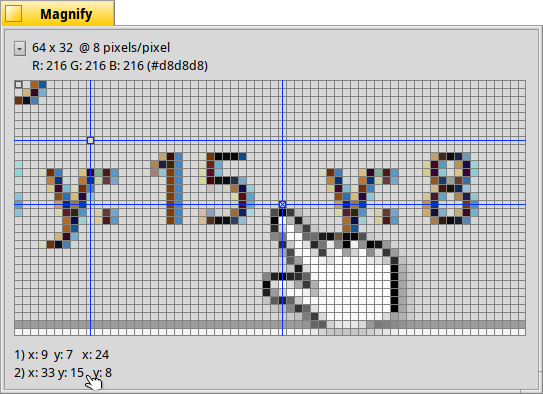

Pembesar (Magnify)
Pembesar (Magnify)
| Deskbar: | ||
| Lokasi: | /boot/system/apps/Magnify | |
| Pengaturan: | ~/config/settings/Magnify_prefs |
Magnify menunjukkan versi area yang diperbesar di sekitar penunjuk mouse Anda.
Di bagian atas Anda akan menemukan ukuran dan tingkat pembesaran area. "64 x 32 @ 8 piksel / piksel" berarti Anda melihat persegi panjang 64x32 piksel di sekitar penunjuk tetikus dan setiap piksel diperbesar dengan faktor 8.
Di bawah itu adalah warna piksel yang ditandai oleh garis merah. Warnanya disajikan sebagai nilai RGB dan hex.
Anda dapat memindahkan garis merah dengan
You can move the red outline with ← / → / ↑ / ↓.
Untuk mengukur jarak dan meluruskan objek, Anda dapat menambahkan hingga dua garis bidik biru dengan ALT H. Koordinat X / Y ke sudut kiri atas dan, jika keduanya ditambahkan, jarak X / Y satu sama lain, ditampilkan di bagian bawah.
Mereka juga dapat dipindahkan dengan ← / → / ↑ / ↓. bidik biru aktif ditandai dengan "x".
Anda dapat memindahkan pixel pointer mouse dengan pixel dengan ALT ← / → / ↑ / ↓.
Mengklik pada menu pop-up atau mengklik kanan ke dalam pixel grid memberi Anda sejumlah opsi:
| ALT S | Menyimpan tampilan saat ini sebagai gambar PNG. | ||
| ALT C | Menyalin tampilan saat ini ke papan klip. | ||
| ALT T | Memperlihatkan informasi tambahan. | ||
| ALT H | Menambahkan titik bidik yang bisa Anda seret. | ||
| ALT SHIFT H | Menghapus crosshair terakhir yang ditambahkan. | ||
| ALT G | Menampilkan hamparan kisi. | ||
| ALT F | Berhenti memperbarui area perbesaran. | ||
| ALT I | Terus memperbarui area perbesaran, tetapi tidak mengikuti pointer mouse lagi. | ||
| ALT / | Kembali ke tampilan persegi setelah mengubah ukuran jendela. | ||
| ALT - | Mengecilkan area yang diperbesar di sekitar penunjuk mouse. | ||
| ALT + | Memperbesar area yang diperbesar di sekitar penunjuk mouse. | ||
| ALT , | Menurunkan pembesaran | ||
| ALT . | Meningkatkan pembesaran |